Mo 1.1.2024 0530
Wahrsager sind Staatsfeinde weil Staaten bauen auf Lügen.
Ich sage
- Wahrheit ist einfach
- Lügen sind komplex
aber wer an Lügen glaubt der sieht es andersrum!
der glaubt: die offizielle Geschichte ist einfach und “Verschwörungstheorien” sind komplex.

fundamental Problems of NOSTR
- There is Chain of Events
- JSON is slow and verbose
- “Signatures” cannot be verified because they are only checksums of cryptographic Signatures
So at best NOSTR is controlled opposition
Sponsored by the CIA because the CIA knows that NOSTR is shit,
Meme Information Overload
Informationsflut
BLAA

Mo 1.1.2014 2200
Einseitigkeit Gerechtigkeit Schieflage Andere bekehren Toleranz Gleichmachen Gleichheit eine Wahrheit mehrere Wahrheiten Objektivismus Subjektivismus Pazifismus Permanenter Streit ein “Gesetz” für Alle Freier Markt equal outcome Equal Opportunity Monismus Dualismus Statik Dynamik Sozialismus Kapitalismus Kollektivismus Individualismus Gleichmacherei Individualförderung Große Gruppen Kleine Gruppen Typen 23 oder 34 Typen 14 oder 12

Chaoten sind besser organisiert
des Kaisers neue Kleider
Lügen sind Psychische Gewalt. Tränen statt Blut
Pazifisten Kämpfer Lügner Wahrsager Passive Gewalt Aktive Gewalt defensiv aggressiv Team Blue Team Red Blaue Pillen Rote Pillen Beruhigungsmittel Wachmacher Alkohol Amphetamin Opium

Di 2.1.2023 0500
Natural Cancer Cures
Herbs were found by observing animals (horses) who were sick (cancer?) and who were deliberately eating specific herbs to fight the disease.
Dumme Menschen sagen “Tiere sind dumm” weil Tiere kein Deutsch reden und weil man schlau sein muss um die Körpersprache der Tiere zu verstehen.
Ahnlich bei Kleinkindern: Die reden auch mit Körpersprache und werden oft nicht verstanden und nicht ernst genommen.

Mama soll die Placenta essen
Schon mal Tiere beobachtet wenn die Kinder kriegen?
Die Placenta, die mit dem Kind rauskommt, wird von der Mutter gefressen weil das die Milchproduktion anregt.
Wir waren so blöd und sind ins Krankenhaus gefahren zum “Entbinden” (für die Geburt unserer Tochter) und als ich die Placenta holen wollte hieß es “die haben wir nicht…”
Also irgendwer hat die Placenta geklaut and wahrscheinlich verkauft an die Pharmaindustrie die teuere “Medizin” draus macht.
Und unsere Mama durfte sowieso nicht “Stillen” weil die Mama ist “ein scheiss Junkie” also Methadon-abhängig… Kind -> Immunschwäche

Di 2.1.2024 0530
Einem Idiot seine Dummheit erklären ist als würde man einem Farbenblinden seine Farbenblindheit erklären. “Ich sehe doch alle farben: Schwarz Dunkelgrau Grau Hellgrau Weiss. sind das nicht genug Farben?!”
Dann sag ich ihm “Was du als Farben verstehst sind nur verschiedene Helligkeiten der Farbe Weiss also verschiedene Intensitäten oder Lichtleistungen. Aber neben der Lichtleistung gibt es auch Lichtfarbe und die kommt von verschiedenen Wellenlängen der Lichtteilchen (Photonen) (freie Elektronen)

Wenn Kapitalismus funktionieren würde also wenn wir einen “freien” Markt hätten ohne Verbote / Steuern / Zölle / Versicherungen /… Banken /… Geldfälscher-Organisationen dann würden die Preise die wahren Lebenskosten zeigen und die wahren Lebenskosten den gleichen Verlauf haben wie die globale Bevölkerung nämlich “Inflation” also “exponentielles Wachstum.” also “Explosion”.
Bei jedem anderen Parameter würden wir sagen “Scheisse! Das explodiert. Wir müssen was machen!”
Aber weil Menschen ein “Recht auf Leben” haben… Tja!

Di 2.1.2024 0600
übrigens:
Das hier ist kein “Aufruf” zu Irgendwas.
Ich beantworte hier die Frage: Was würde ich machen in der “König der Welt” wäre?
wenn ich alles entscheiden darf. wenn ich alle Freiheiten habe.
Was andere Menschen machen das ist mir egal, die meisten Menschen sind sowieso Idioten die mich immer nur falsch verstehen.
Wie funktioniert Betrug?
Beispiel Bioscan: Bioscan verspricht eine Messung Von vielen Gesundheits- Parametern wie Elektrolyte, Vitamine, …
Aber: Bioscan ist nur ein Zufallsgenerator und das wird versteckt indem man die “Messung” teuer macht. nicht reproduzierbar weil zu teuer.

Warum sind “Marsmenschen” grün? Planet Mars ist ein Symbel für Typ 1 (oder für Typen 14 = männlich)
Warum tragen Frauen rot und Männer blau?
Substantiv and Adjektiv
Hauptwort und Nebenwort
Äussere Werte und Innere WerteMann männlich
Weib weiblichgender-opposing types:
männliche Weiber und weibliche Männer
F14 und M23

Di 2.1.2024 0630
Global Warming oder Global Cooling?
Global Warming: Im Polarklima bleiben weil es wird automatisch wärmer
oder
Global Cooling: Auswandern Richtung Tropenklima weil hier wird kälter (Eiszeit?)
Blindheit und Sensibilitat sind subjektiv und reziprok
meine Schwäche ist deine Stärke
meine Stärke ist deine SchwächeAlso die Frage ist:
Wie funktioniert eine Ergänzung
eine Ergänzung von Gegensätzen

Stärke Schwäche bewusst unterbewusst sensibel blind Fachgebiet blinder Fleck Führer Folger Wissen Glauben Jeder Mensch hat Stärken und Schwächen. (nichts Neues)
Das Neue ist eine “Soziale Lösung” von Schwäche durch “Paarung” mit anderen Menschen vom Gegentyp.
Ich als Typ 1 sage:
Meine Stärke ist Typ 1
meine Schwache ist Typ 2.weil Typ 2 ist das Gegenteil von Typ 1:
1 3 x 4 2

Di 2.1.2024 1130
Probleme wie
Great Reset
Enteignung
Inflation
Zentralisierung
Migranten-Invasion
Zerstörung von Sozialstaat
Krieg
… sind alles sehr reale Probleme
aber das alles sind große Probleme
die zu weit weg sind
so dass man gefangen bleibt in Passivitat
und sich höchstens Schlau fühlen kann
weil “Wissen ist Macht”

Mich interessieren solche Probleme
wo man aktiv werden kann
die man im privaten Umfeld
bearbeiten = angreifen = lösen kann
also “lösbare Probleme”
also “erstmal vor der eigenen Haustür kehren”
also Bottom-up Strategien

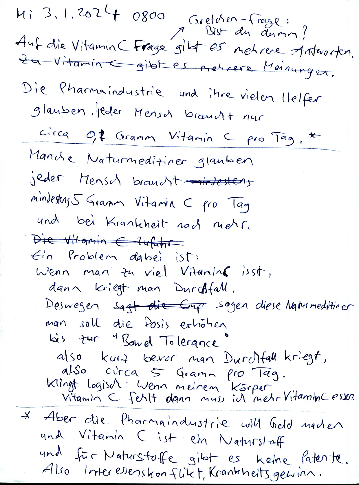Mi 3.1.2024 0800
Auf die Vitamin C Frage
(Gretchen-Frage: Bist du dumm?)
gibt es mehrere Antworten.Die Pharmaindustrie
und ihre vielen Helfer glauben,
jeder Mensch braucht
nur circa 0,1 Gramm Vitamin C pro Tag.Aber die Pharmaindustrie will Geld machen
und Vitamin C ist ein Naturstoff
und für Naturstoffe gibt es keine Patente.
Also Interessenskonflikt, Krankheitsgewinn.Manche Naturmediziner glauben
jeder Mensch braucht
mindestens 5 Gramm Vitamin C pro Tag
und bei Krankheit noch mehr.Ein Problem dabei ist:
Wenn man zu viel Vitamin C isst,
dann kriegt man Durchfall.Deswegen sagen diese Naturmediziner
man soll die Dosis erhöhen
bis zur “Bowel Tolerance”
also kurz bevor man Durchfall kriegt,
also circa 5 Gramm pro Tag.Klingt logisch:
Wenn meinem Körper Vitamin C fehlt
dann muss ich mehr Vitamin C essen.
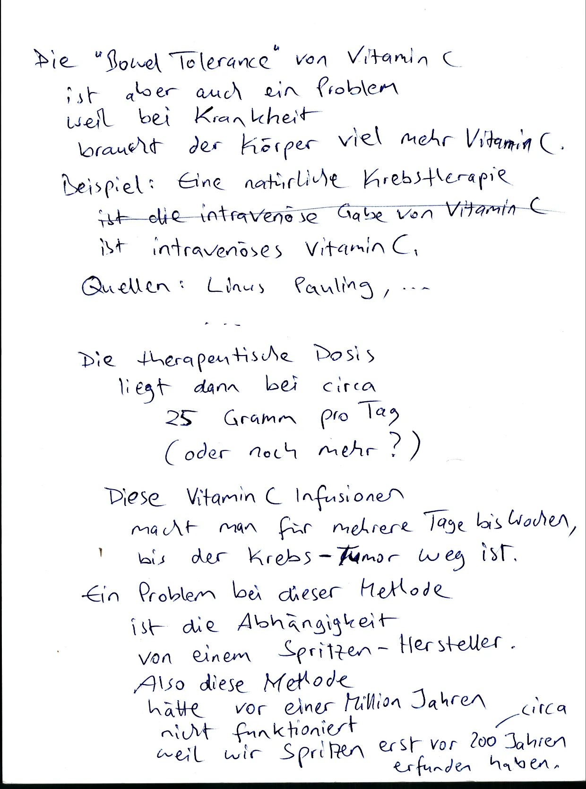Die “Bowel Tolerance” von Vitamin C ist aber auch ein Problem weil bei Krankheit braucht der Körper viel mehr Vitamin C.
Beispiel: Eine natürliche Krebstherapie ist die intravenose Gabe von Vitamin C ist intravenöses Vitamin C, Quellen: Linus Pauling
Die therapeutische Dosis liegt dann bei circa 25 Gramm pro Tag (oder noch mehr?)
Diese Vitamin C Infusionen macht man für mehrere Tage bis Wochen, bis der Krebs-Tumor weg ist.
Ein Problem bei dieser Methode ist die Abhängigkeit von einem Spritzen-Hersteller.
Also diese Methode hätte vor einer Million Jahren nicht funktioniert weil wir Spritzen erst vor circa 200 Jahren erfunden haben.
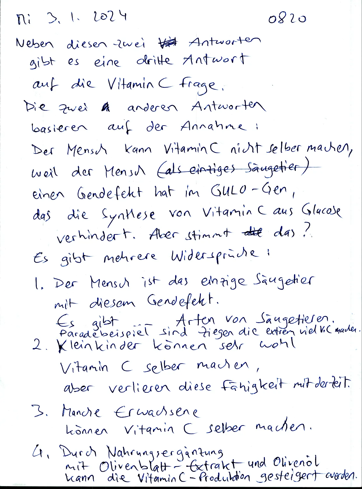Mi 3.1.2024 0820
Neben diesen zwei Antworten gibt es eine dritte Antwort auf die Vitamin C Frage. Die zwei anderen Antworten basieren auf der Annahme:
Der Mensch kann Vitamin C nicht selber machen, weil der Mensch (als einziges Säugetier) einen Gendefekt hat im GULO-Gen, das die Synthese von Vitamin C aus Glucose verhindert. Aber stimmt das?
Es gibt mehrere Widersprüche:
- Der Mensch ist das einzige Säugetier mit diesem Gendefekt. Es gibt 6000 Arten von Säugetieren. Paradebeispiel sind Ziegen die extrem viel Vitamin C machen.
- Kleinkinder können sehr wohl Vitamin C selber machen aber verlieren diese Fähigkeit mit der Zeit.
- Manche Erwachsene können Vitamin C selber machen.
- Durch Nahrungsergänzung mit Olivenblatt-Extrakt und Olivenöl kann die Vitamin C Produktion gesteigert werden.
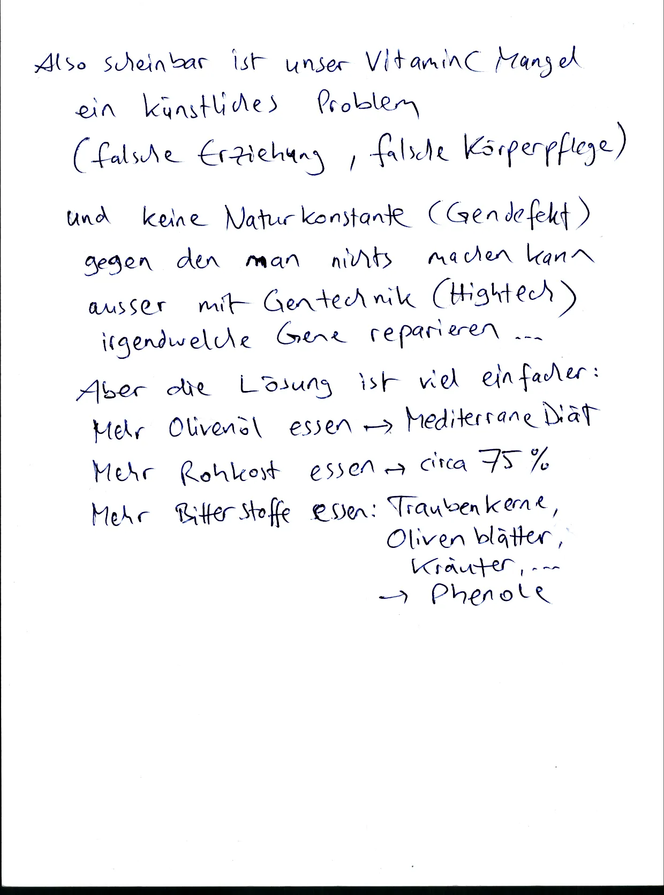Also scheinbar ist unser Vitamin C Mangel ein künstliches Problem (falsche Erziehung, falsche Körperpflege) und keine Naturkonstante (Gendefekt) gegen den man nichts machen kann ausser mit Gentechnik (Hightech) irgendwelche Gene reparieren.
Aber die Lösung ist viel einfacher: Mehr Olivenöl essen -> Mediterrane Diät Mehr Rohkost essen -> circa 75% Mehr Bitterstoffe essen: Traubenkerne, Olivenblätter, Kräuter, … -> Phenole
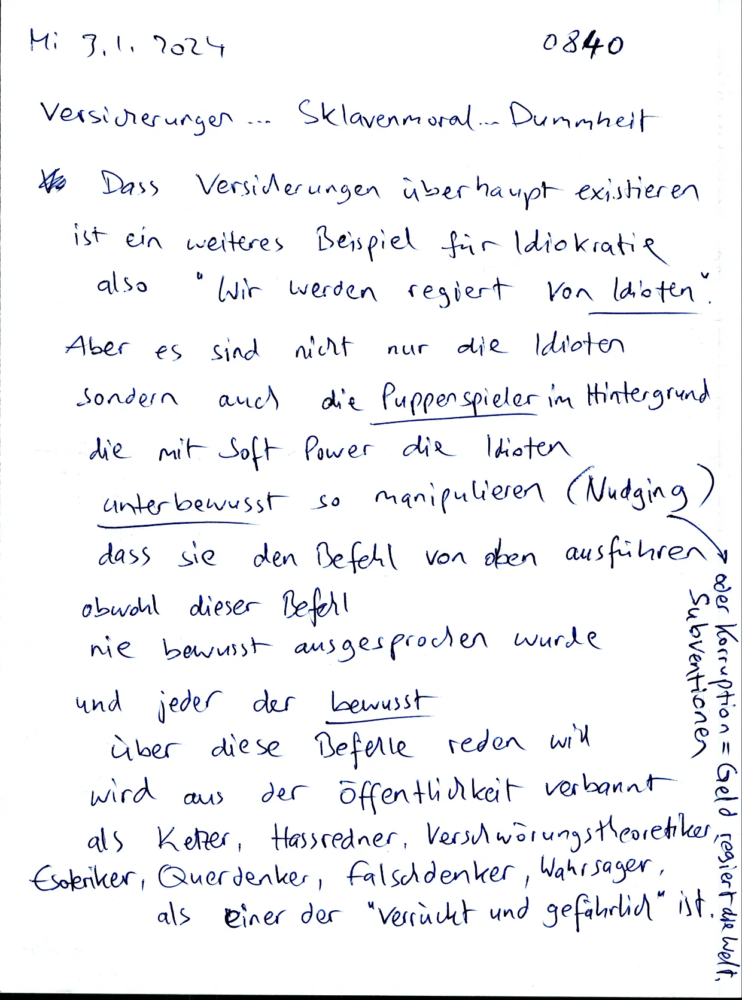Mi 3.1.2024 0840
Versicherungen… Sklavenmoral… Dummheit
Dass Versicherungen überhaupt existieren ist ein weiteres Beispiel für Idiokratie also “Wir werden regiert von Idioten”.
Aber es sind nicht nur die Idioten sondern auch die Puppenspieler im Hintergrund die mit Soft Power die Idioten unterbewusst so manipulieren (Nudging) (oder Korruption = Geld regiert die Welt, Subventionen) dass sie den Befehl von oben ausführen obwohl dieser Befehl nie bewusst ausgesprochen wurde und jeder der bewusst über diese Befehle reden wil wird aus der Öffentlichkeit verbannt als Ketzer, Hassredner, Verschwörungstheoretiker, Esoteriker, Querdenker, Falschdenker, Wahrsager, als einer der “verrückt und gefährlich” ist.
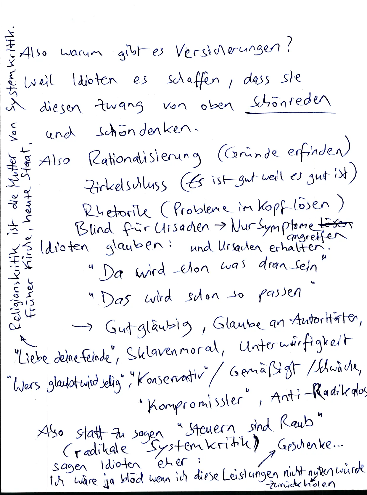Also warum gibt es Versicherungen?
Weil Idioten es schaffen, dass sie diesen Zwang von oben Schönreden und schöndenken.
Also Rationalisierung (Gründe erfinden)
Zirkelschluss (Es ist gut weil es gut ist)
Rhetorik (Probleme im Kopf lösen)
Blind für Ursachen -> Nur Symptome angreifen und Ursauen erhalten.Idioten glauben:
“Da wird schon was dran sein”
“Das wird schon so passen”
→ gutgläubig, Glaube an Autoritäten, “Liebe deine Feinde” (Religionskritik ist die Mutter von Systemkritik) (Früher Kirche, heute Staat), Sklavenmoral, Unterwürfigkeit “Wers glaubst wird selig”, “Konservativ / Gemäßigt / Schwäche,”Kompromissler”, Anti-Radikalos Also statt zu sagen “Steuern sind Raub” (radikale Systemkritik)… sagen Idioten eher: Ich wäre ja blöd wenn ich diese Leistungen (Geschenke) nicht nutzen (zurück holen) würde.
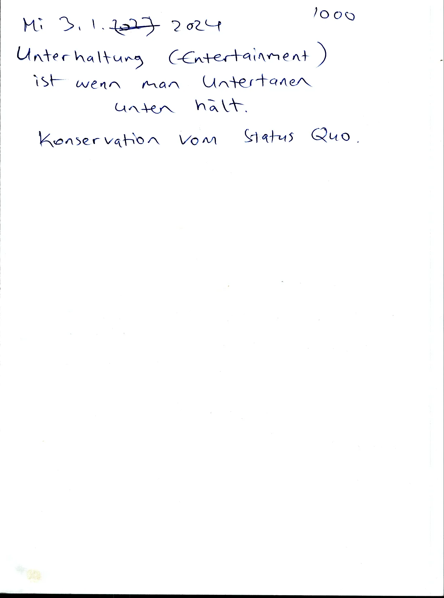Mi 3.1.2024 1000
Unterhaltung (Entertainment) ist wenn man Untertanen unten hält.
Konservation vom Status Quo.
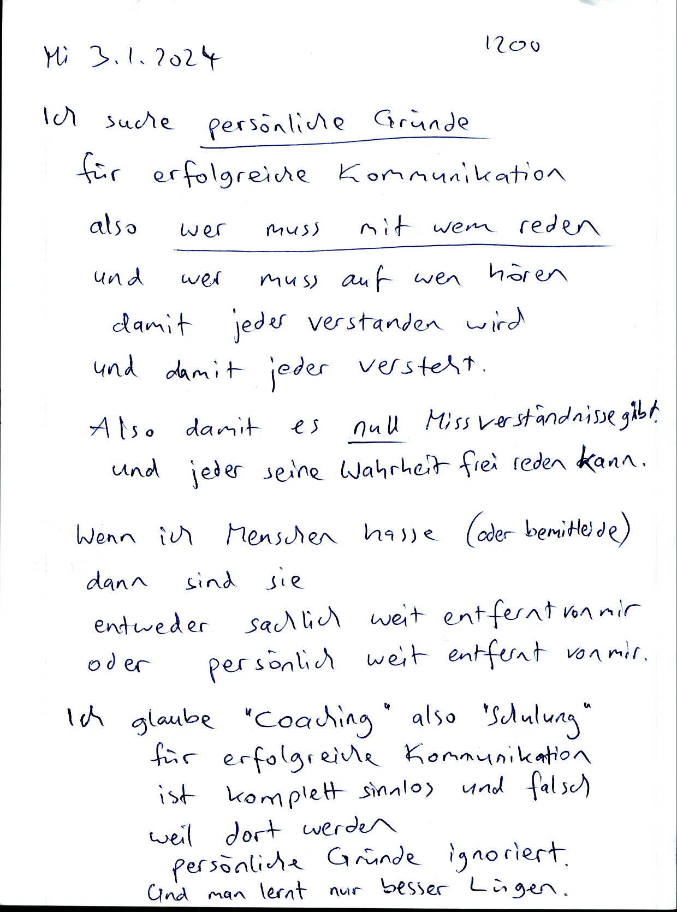Mi 3.1.2024 1200
Ich suche persönliche Gründe für erfolgreiche Kommunikation also wer muss mit wem reden und wer muss auf wen hören damit jeder verstanden wird und damit jeder versteht.
Also damit es null Missverständnisse gibt. und jeder seine Wahrheit frei reden kann.
Wenn ich Menschen hasse (oder bemitleide) dann sind sie entweder sachlich weit entfernt von mir oder persönlich weit entfernt von mir.
Ich glaube “Coaching” also “Schulung” für erfolgreiche Kommunikation ist komplett sinnlos und falsch weil dort werden persönliche Gründe ignoriert und man lernt nur besser Lügen.
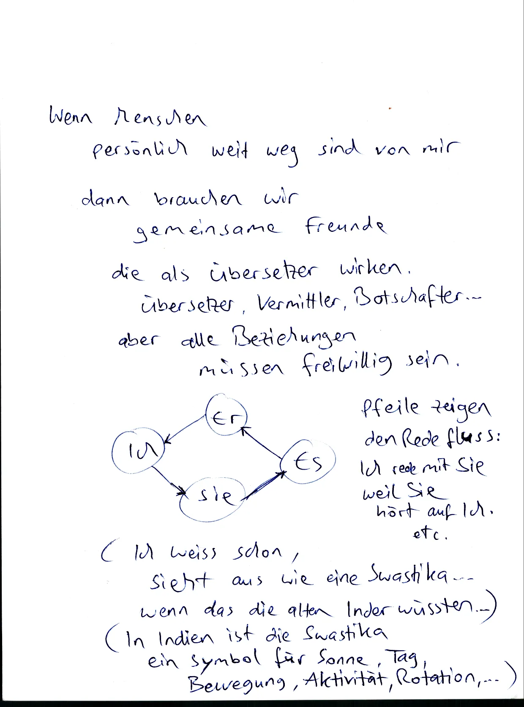Wenn Menschen persönlich weit weg sind von mir dann brauchen wir gemeinsame Freunde die als Übersetzer wirken. Übersetzer, Vermittler, Botschafter… aber alle Beziehungen müssen freiwillig sein.
Ich ← Er ↓ ↑ Sie → EsPfeile zeigen den Rede fluss:
Ich rede mit Sie weil Sie hört auf Ich.
etc.(Ich weiss schon, sieht aus wie eine Swastika… wenn das die alten Inder wüssten…)
(In Indien ist die Swastika ein symbol für Sonne, Tag, Bewegung, Aktivität, Rotation, …)
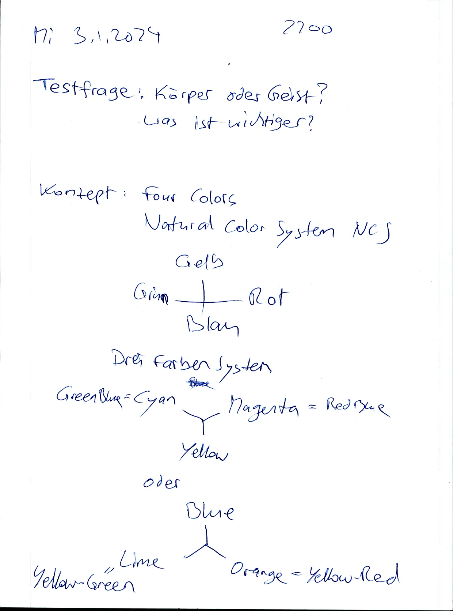Mi 3.1.2024 2200
Testfrage: Körper oder Geist?
Was ist wichtiger?
Konzept: Four Colors
Natural Color System NCSGelb Grün + Rot BlauDrei Farben System
Green-Blue Red-Blue Cyan Magenta Y Yellowoder
Blue 人 Lime Orange Yellow-Green Yellow-Red
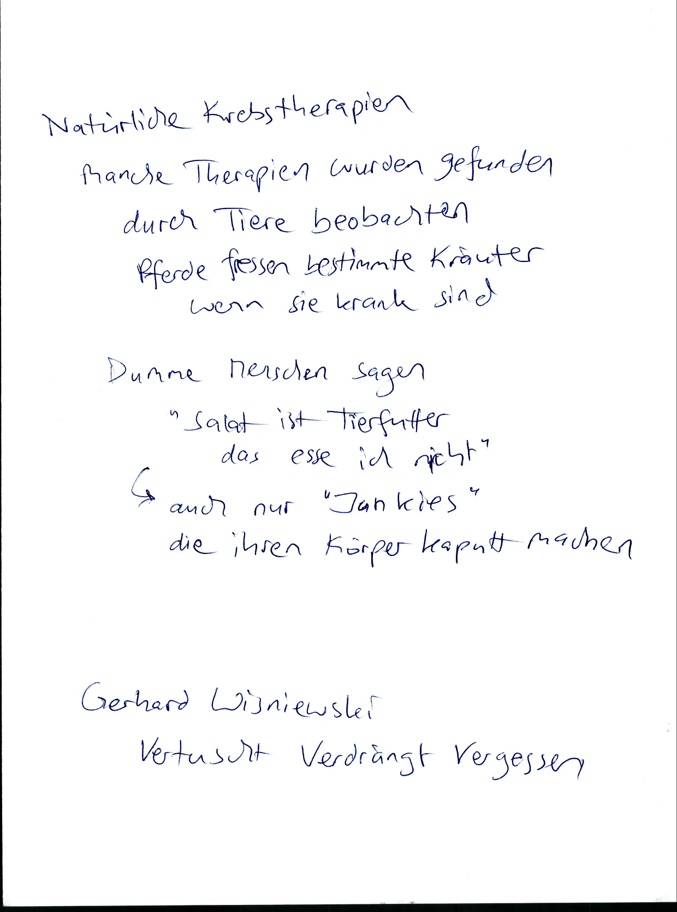Natürliche Krebstherapien
Manche Therapien wurden gefunden
durch Tiere beobachten.
Pferde fressen bestimmte Kräuter
wenn sie krank sindDumme Menschen sagen
“Salat ist Tierfutter
das esse ich nicht”
-> auch nur “Junkies”
die ihren Körper kaputt machen
Gerhard Wisnewski
Vertuscht Verdrängt Vergessen
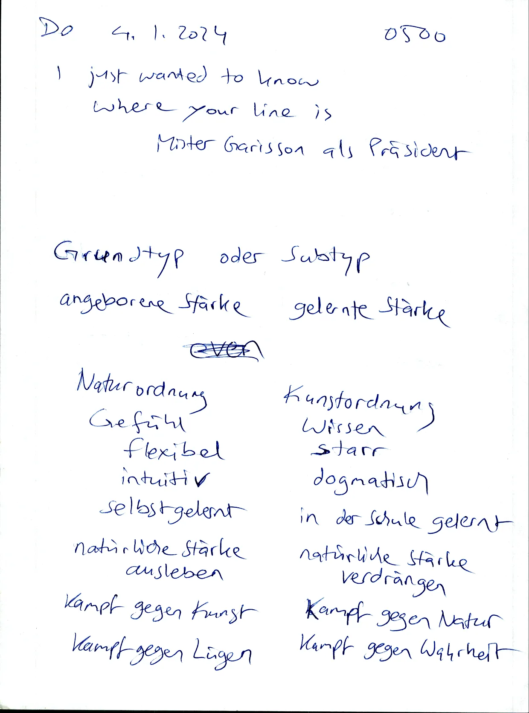Do 4.1.2024 0500
I just wanted to know
where your line is.
– Mister Garisson als Präsident
Grundtyp oder Subtyp
Grundtyp Subtyp angeborene Stärke gelernte Stärke
Kunstordnung oder Naturordnung
Kunstordnung Naturordnung Wissen Gefühl starr flexibel dogmatisch intuitiv in der Schule gelernt Selbstgelernt natürliche Stärke verdrängen natürliche Stärke ausleben Kampf gegen Natur Kampf gegen Kunst Kampf gegen Wahrheit Kampf gegen Lügen
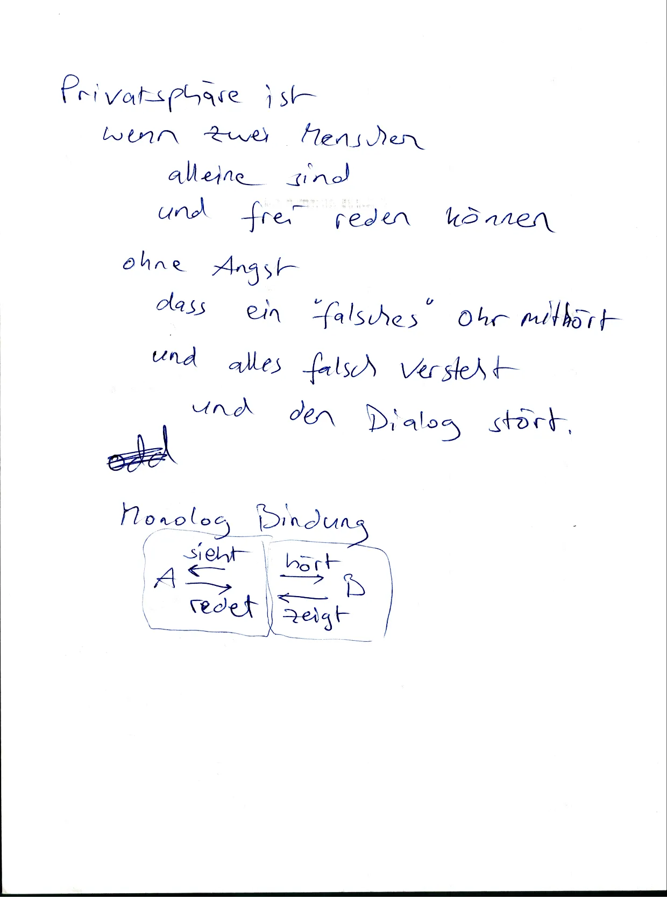Privatsphäre ist wenn zwei Menschen alleine sind und frei reden können ohne Angst dass ein “falsches” Ohr mithört und alles falsch versteht und den Dialog stört.
aka Monolog Bindung:
A sieht und redet
B hört und zeigt
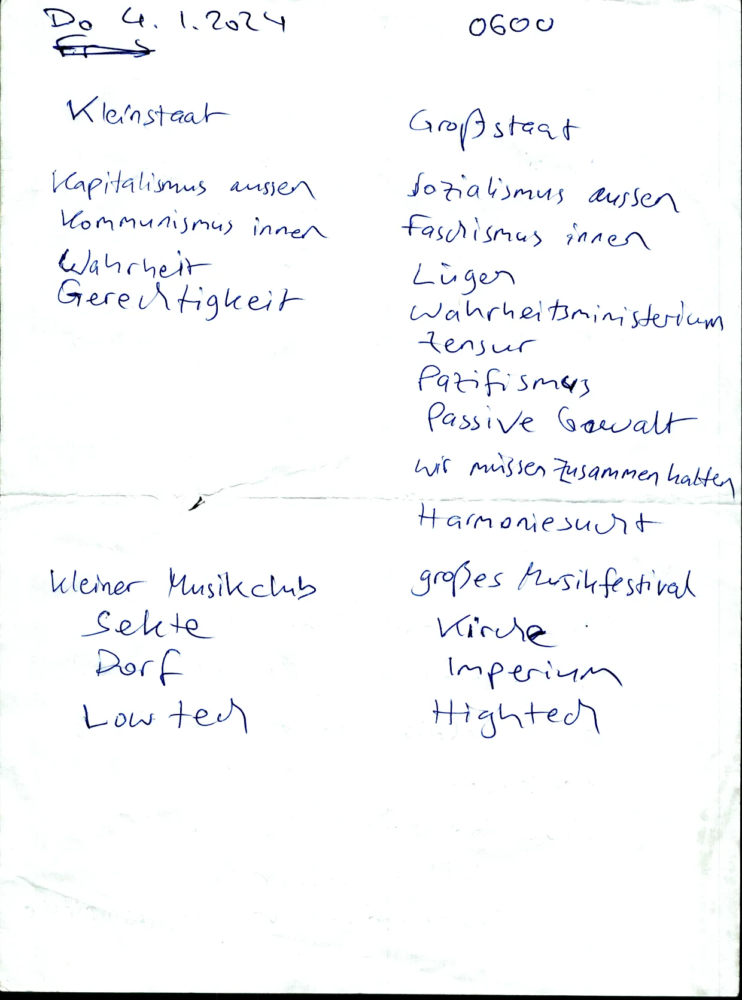Do 4.1.2024 0600
Kleinstaat Großstaat Kapitalismus aussen (Typ 2) Sozialismus aussen (Typ 3) Kommunismus innen (Typ 1) Faschismus innen (Typ 4) Wahrheit Lügen Gerechtigkeit Wahrheitsministerium . Zensur . Pazifismus . Passive Gewalt . wir müssen zusammen halten (Kunstordnung) . Harmoniesucht kleiner Musikclub großes Musikfestival Sekte Kirche Dorf Imperium (Stadt) Lowtec Hightech
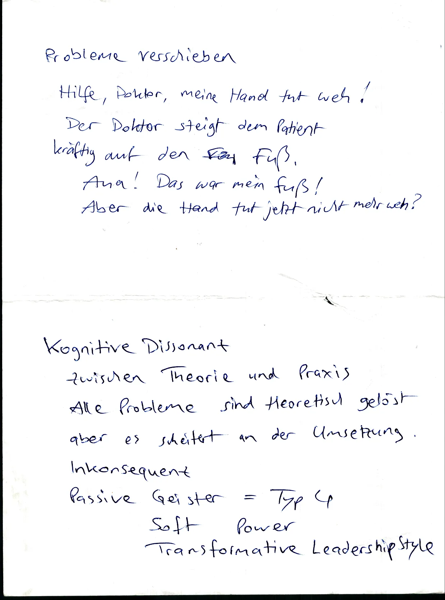Probleme verschieben
Hilfe, Doktor, meine Hand tut weh!
Der Doktor steigt dem Patient
kräftig auf den Fuß.
Aua! Das war mein Fuß!
Aber die Hand tut jetzt nicht mehr weh?Kognitive Dissonanz
Zwischen Theorie und Praxis
Alle Probleme sind theoretisch gelöst
aber es scheitert an der Umsetzung.Inkonsequenz
Passive Geister
Typ 4
Soft Power
Transformative Leadership Style
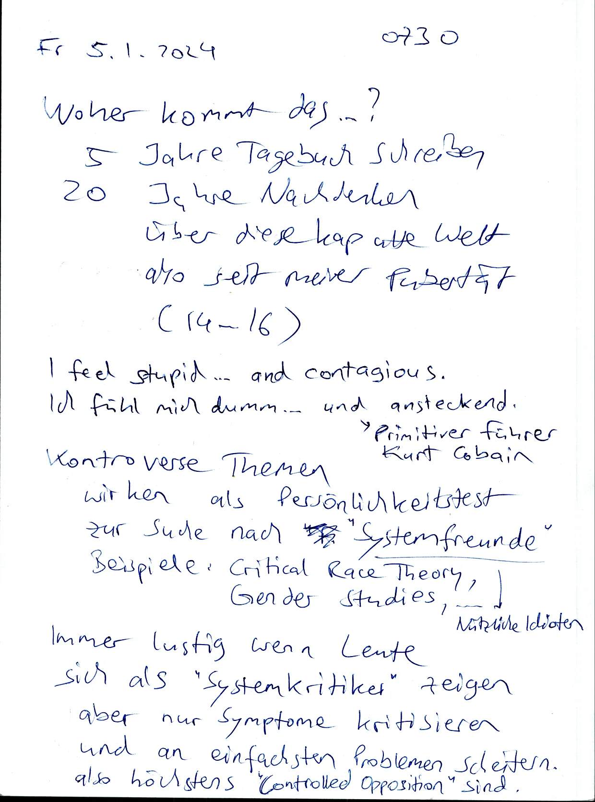Fr 5.1.2024 0730
Pallas Hypothese
Woher kommt das…?
5 Jahre Tagebuch Schreiben
20 Jahre Nachdenken
über diese kaputte Welt
also seit meiner Pubertät (14-16)I feel stupid… and contagious.
Ich fühl mich dumm.. und ansteckend.
-> Primitiver Führer: Kurt Cobain (M1)Kontroverse Themen
wirken als Persönlichkeitstest
zur Suche nach “Systemfreunde”
(nützliche Idioten)Beispiele: Critical Race Theory, Gender Studies
Immer lustig wenn Leute sich als “Systemkritiker” zeigen aber nur Symptome kritisieren und an einfachsten Problemen Scheitern. also höchstens “Controlled Opposition” sind.
(einfachste Probleme: Übervölkerung, Degeneration)
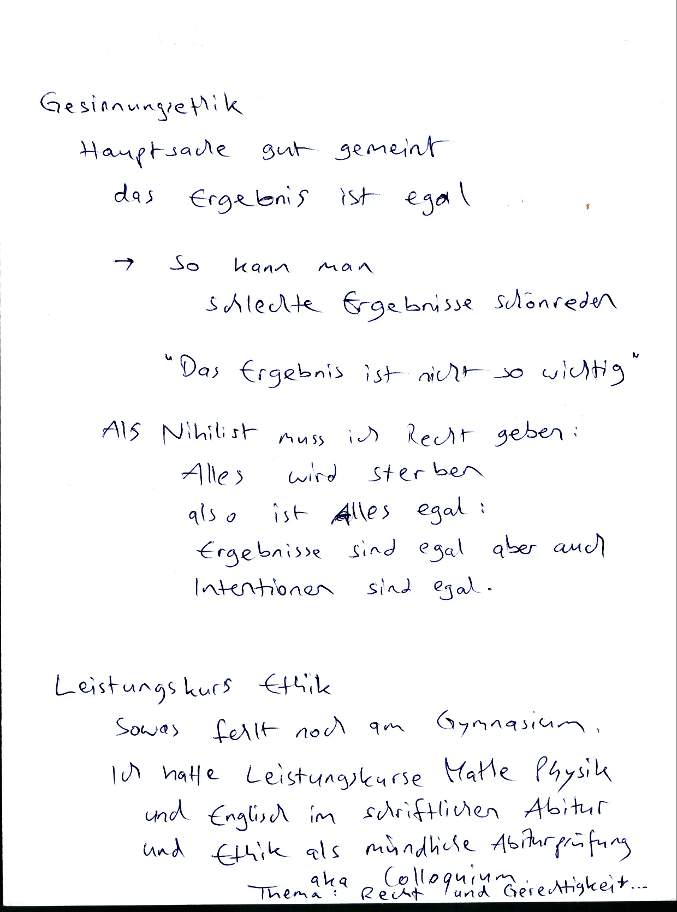9150
Gesinnungsethik
Hauptsache gut gemeint
das Ergebnis ist egal
-> So kann man schlechte Ergebnisse schönreden
“Das Ergebnis ist nicht so wichtig”Als Nihilist muss ich Recht geben:
Alles wird Sterben.
Alles ist egal:
Ergebnisse sind egal und
Intentionen sind egal.Leistungskurs Ethik
Sowas fehlt noch am Gymnasium.
Ich hatte Leistungskurse Matte Physik
und Englisch im schriftlichen Abitur
und Ethik als mündliche Abiturprüfung.Ethik Colloquium Thema:
Recht und Gerechtigkeit
(Konflikt zwischen legal und legitim)
(Konflikt zwischen Kunstordnung und Naturordnung)
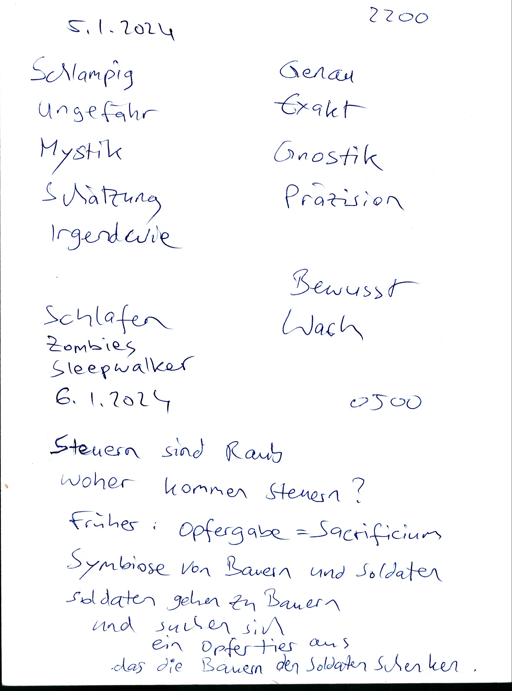5.1.2024 2200
Schlampig Genau Ungefähr Exakt Mystik Gnostik Schätzung Präzision Irgendwie . . Bewusst Schlafen Wach Zombies . Sleepwalker . 6.1.2024 0500
Steuern sind Raub
Woher kommen Stenern?
Früher:
Opfergabe = Sacrificium
Symbiose von Bauern und Soldaten
Soldaten gehen zu Bauern
und suchen ein Opfertier aus
das die Bauern den Soldaten schenken
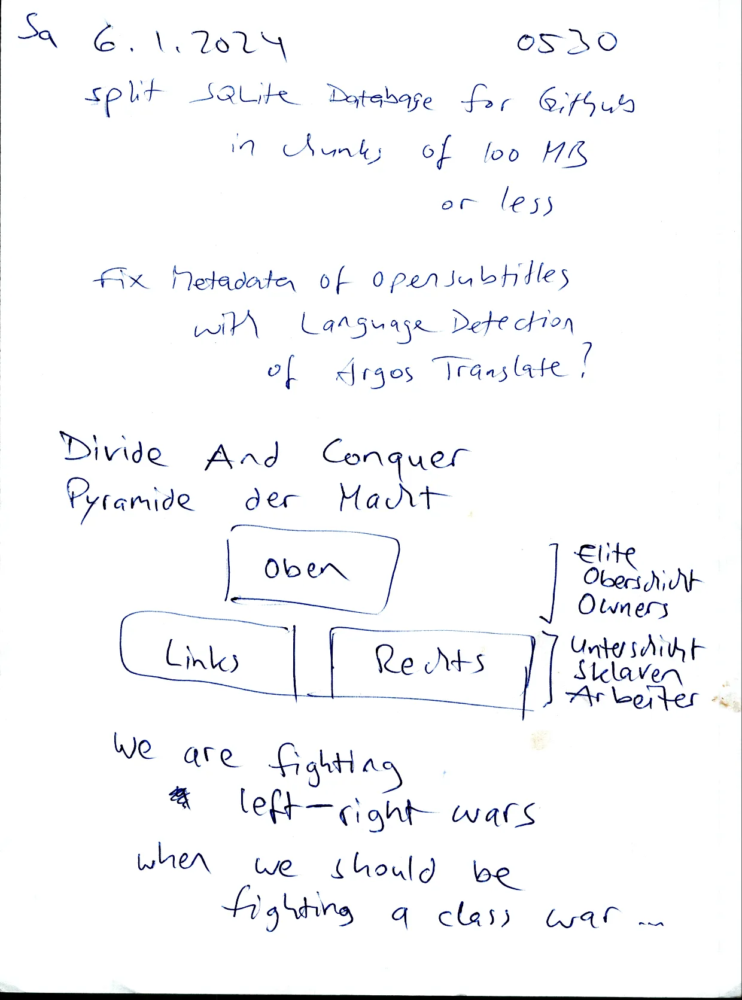Sa 6.1.2024 0530
TODO Coding
Split SQLite Database for Github in chunks of 100 MB or less (done)
Fix Metadata of opensubtitles with Language Detection of Argos Translate?
Divide And Conquer
Pyramide der Macht
Oben Links Rechts
Oben Unten Elite Unterschicht Oberschicht Sklaven Owners Arbeiter We are fighting left-right wars
when we should be fighting a class war(querfront)
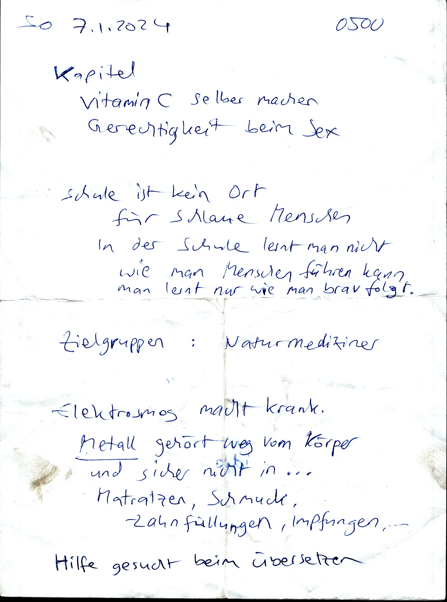So 7.1.2024 0500
Kapitel
- Vitamin C selber machen
- Gerechtigkeit beim Sex
Schule ist kein Ort für schlaue Menschen
In der Schule lernt man nicht wie man Menschen führen kann, man lernt nur wie man brav folgt.
Zielgruppe
Naturmediziner
Elektrosmog macht krank
Metall gerört weg vom Körper und sicher nicht in Matratzen, Schmuck, Zahnfüllungen, Impfungen….
Hilfe gesucht beim übersetzen
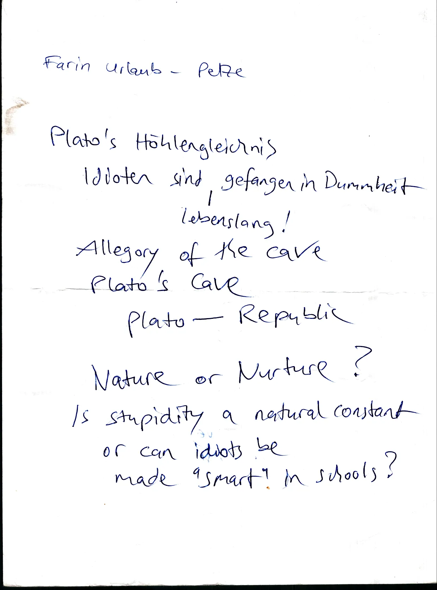Farin urlaub - Petze
Plato’s Höhlengleichnis
Idioten sind gefanger in Dummheit Lebenslang!
Allegory of the cave
Plato’s Cave
Plato - Republic
Nature or Nurture?
Is stupidity a natural constant or can idiots be made “smart” in schools?
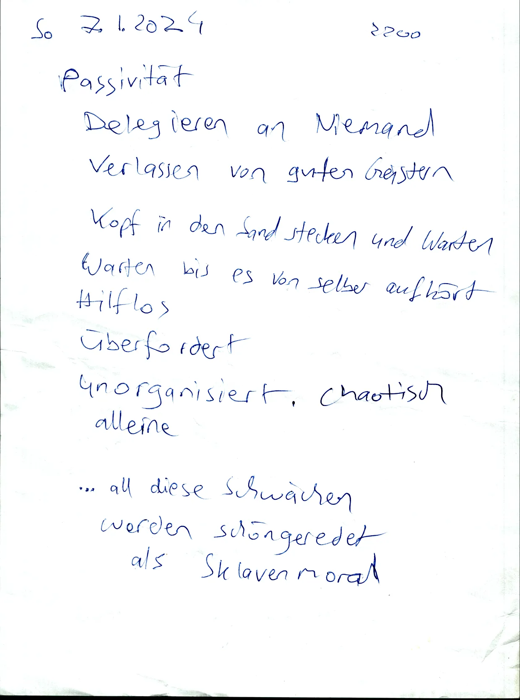So 71.2024 2200
Passivität
- delegieren an Niemand
- verlassen von guten Geistern
- Kopf in den Sand stecken und warten
- warten bis es von selber aufhört
- hilflos
- überfordert
- unorganisiert
- chaotisch
- alleine
… all diese Schwächen werden schöngeredet als Sklavenmoral
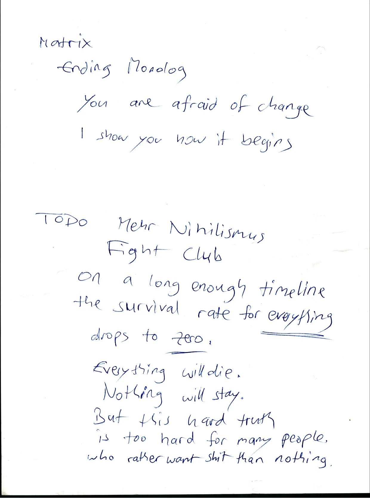Matrix
Ending Monolog
You are afraid of change
I show you how it begins
ТODO Mehr Nihilismus
Fight Club
on a long enough timeline the survival rate for everything drops to Zero, Everything will die. Nothing will stay.
But this hard truth is too hard for many people who rather want shit than nothing.
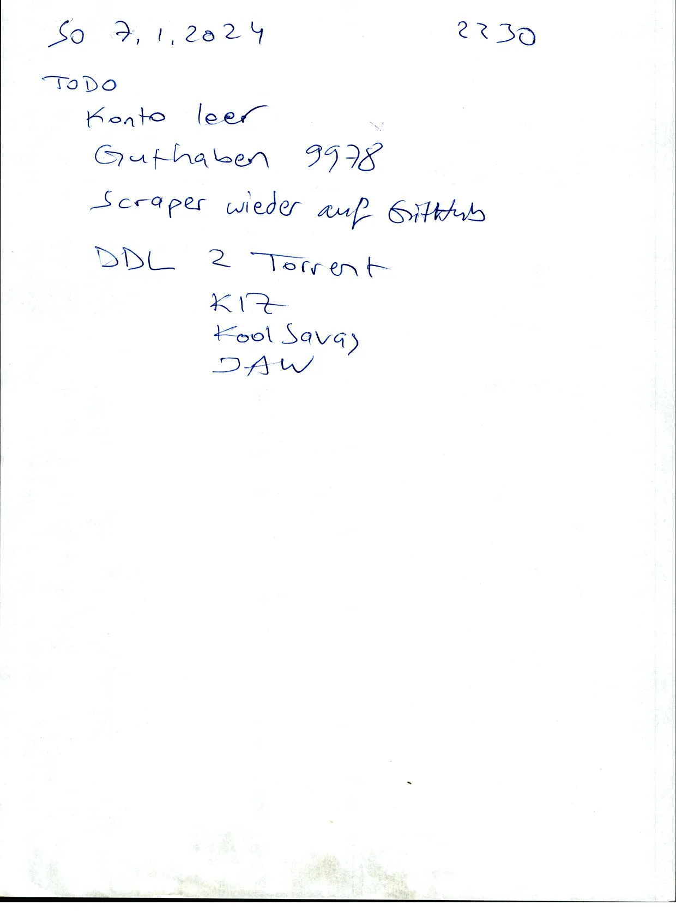So 7.1.2024 2230
TODO
- Konto leer
- Guthaben 9978
- Scraper wieder auf Github
DDL 2 Torrent
- KIZ
- Kool Savas
- JAW
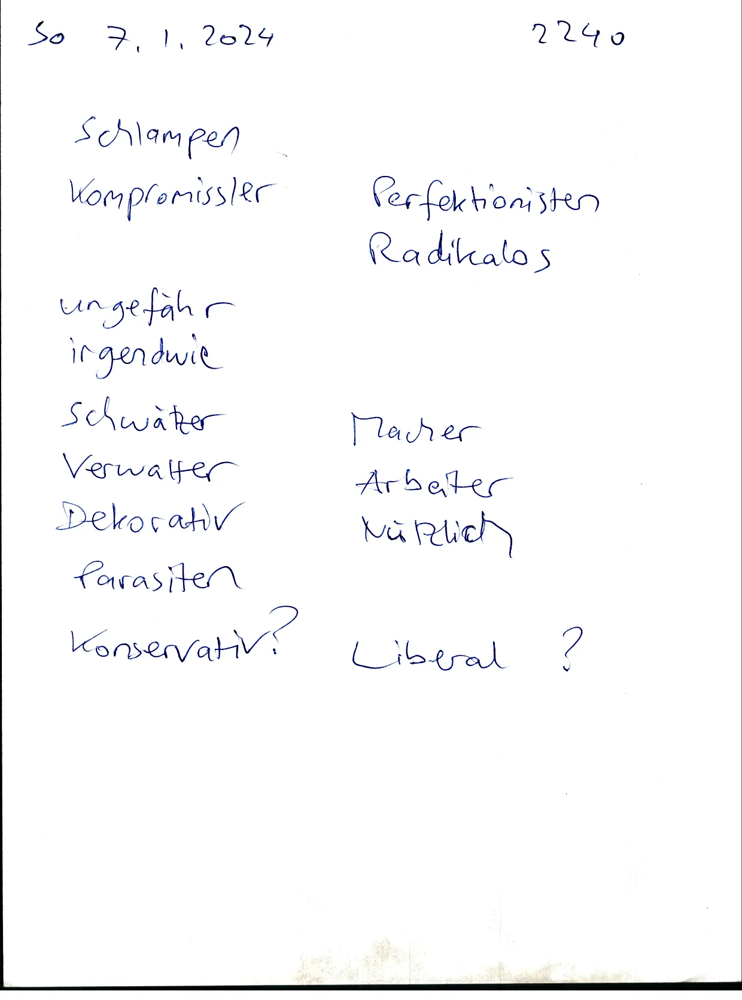So 7.1.2024 2240
Schlampen . Kompromissler Perfektionisten . Radikalos ungefähr . irgendwie . Schwätzer Macher Verwalter Arbeiter Dekorativ Nützlich Parasiten . Konservativ? Liberal?
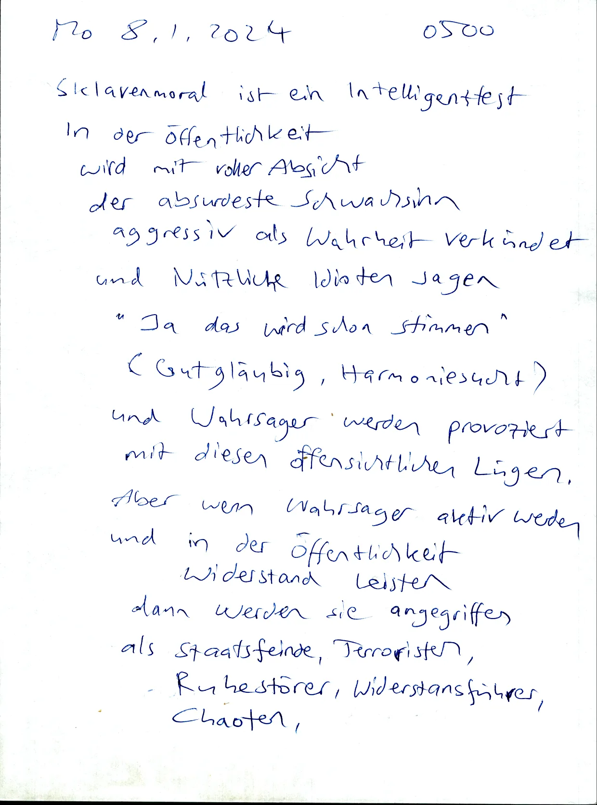Mo 8.1.2024 0500
Sklavenmoral ist ein Intelligenztest
In der Öffentlichkeit wird mit voller Absicht der absurdeste Schwachsinn aggressiv als Wahrheit verkündet und Nützliche Idioten sagen “Ja das wird schon stimmen” (Gutgläubig, Harmoniesuchr) und Wahrsager werden provoziert mit dieser offensichtlichen Lügen.
Aber wenn Wahrsager aktiv weden und Widerstand leisten in der Öffentlichkeit dann werden sie angegriffen als Staatsfeinde, Terroristen, Ruhestörer, Widerstandsführer, Chaoten
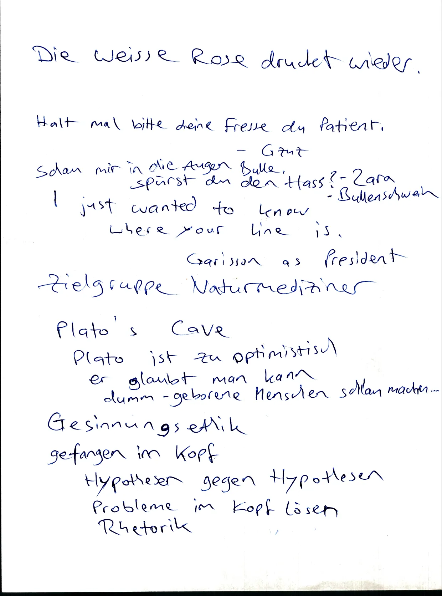Die weisse Rose druckt wieder.
Halt mal bitte deine Fresse du Patient.
– GzuzSchau mir in die Augen Bulle.
spürst du den Hass?
– Zara - Bullenschwein
Zielgruppe Naturmediziner
just wanted to know where your line is.
Garisson as President
Plato’s Cave
Plato ist zu optimistisch
er glaubt man kann
dumm-geborene Menschen schlau machen…
Gesinnungsethik
- gefangen im Kopf
- Hypothesen gegen Hypothesen
- Probleme im Kopf Lösen
- Rhetorik